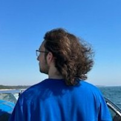

Hello, I am a 2nd year university student studying Game design and Development at SAE .
I am a confident and adaptable person who loves working with others.
I am looking for part time work in Melbourne to complement my studies in game development to grow my knowledge and skills and increase my experience and potential.
I am intelligent, clever and a quick learner, I enjoy working with others in fast paced environments that challenge me.
I am a generalist artist who is always looking for new skillsets to learn and new projects to work on. Throughout this year I have made my own
games thanks to uni and also been working on programming projects that have challenged my sklillset, this would include a cloud based discord bot
and this current website you are reading :).

My 3D experience has come from a long list of commissions inside of the platform of VRChat where I have grown from doing simple retextures to full scale Custom Models from clients. This has then helped to grow into learning the entire game development pipeline and I currently have the ability to be a single indie devlouper.